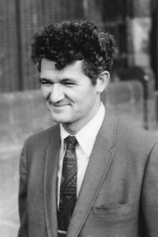

Peter Lax | |
|---|---|
 Lax in Tokyo in 1969 | |
| Born | Péter Dávid Lax 1 May 1926 |
| Died | 16 May 2025 (aged 99) New York City, U.S. |
| Alma mater | |
| Known for | |
| Awards |
|
| Scientific career | |
| Fields | Mathematics |
| Institutions | Courant Institute |
| Thesis | Nonlinear System of Hyperbolic Partial Differential Equations in Two Independent Variables (1949) |
| K. O. Friedrichs | |
Doctoral students | |
Peter David Lax (1 May 1926 – 16 May 2025) was a Hungarian-born American mathematician and Abel Prize laureate working in the areas of pure and applied mathematics.
Lax made important contributions to integrable systems, fluid dynamics and shock waves, solitonic physics, hyperbolic conservation laws, and mathematical and scientific computing, among other fields. In a 1958 paper Lax stated a conjecture about matrix representations for third-order hyperbolic polynomials which remained unproven for over four decades. Interest in the "Lax conjecture" grew as mathematicians working in several different areas recognized the importance of its implications in their field, until it was finally proven to be true in 2003.[1]
Lax was born on 1 May 1926 in Budapest, Hungary,[2] to a Jewish family.[3] He began displaying an interest in mathematics at age twelve, and soon his parents hired Rózsa Péter as a tutor for him.[4] His parents Klara Kornfield and Henry Lax were both physicians and his uncle Albert Kornfeld (also known as Albert Korodi) was a mathematician, as well as a friend of Leó Szilárd. The family left Hungary on 15 November 1941 during World War II, and traveled via Lisbon to the United States.
As a student at Stuyvesant High School, Lax took no math classes but did compete on the school math team. During this time, he met with John von Neumann, Richard Courant, and Paul Erdős, who introduced him to Albert Einstein. As he was still 17 when he finished high school, he could avoid military service, and was able to study for three semesters at New York University. He attended a complex analysis class in the role of a student, but ended up taking over as instructor. He met his future wife, Anneli Cahn (married to her first husband at that time) in this class.[4][5]
Before being able to complete his studies, Lax was drafted into the U.S. Army. After basic training, the Army sent him to Texas A&M University for more studies. He was then sent to Oak Ridge National Laboratory, and soon afterwards to the Manhattan Project at Los Alamos, New Mexico. At Los Alamos, he began working as a calculator operator, but eventually moved on to higher-level mathematics.[6]
After the war ended, Lax remained with the Army at Los Alamos for another year, while taking courses at the University of New Mexico, then studied at Stanford University for a semester with Gábor Szegő and George Pólya.[4] Lax returned to NYU for the 1946–1947 academic year, and by pooling credits from the four universities at which he had studied, he graduated that year. He stayed at NYU for his graduate studies, marrying Anneli in 1948 and earning a PhD in 1949 under the supervision of Kurt O. Friedrichs.[4][5] After Anneli's death in 1999, Lax married Courant's daughter, Lori Berkowitz.[2]
In 1954, the U.S. Atomic Energy Commission put Lax and several of his colleagues at NYU in charge of using an early supercomputer to calculate the risk of flooding for a major nuclear reactor if a nearby dam were sabotaged; they concluded that the reactor would be safe.[2]
Lax made contributions to the theory of hyperbolic partial differential equations. He made breakthroughs in understanding shock waves from bombs, weather prediction and aerodynamic design.[2]
Concepts that bear Lax's name include the Lax equivalence theorem, which explained when numerical computer approximations would be reliable, and Lax pairs, which are helpful in understanding the motion of solitons. With Ralph Phillips, Lax developed the Lax-Phillips semigroup in scattering theory, which explained how waves move around obstacles and showed how to use the pattern of a wave's frequencies to understand its motion. That theory is helpful in processing radar signals.[2]
Lax held a faculty position in the Department of Mathematics, Courant Institute of Mathematical Sciences, New York University.[7] Beginning in 1963, Dr. Lax directed the Courant Institute's computing facilities.[2]
Lax died of cardiac amyloidosis at his Manhattan home, on 16 May 2025, at the age of 99.[2]
He was a member of the Norwegian Academy of Science and Letters[8] and the National Academy of Sciences, USA,[9] the American Academy of Arts and Sciences,[10] and the American Philosophical Society.[11] He won a Lester R. Ford Award in 1966[12] and again in 1973.[13] In 1974, his shock wave article[13] also won the Chauvenet Prize. He was awarded the National Medal of Science in 1986, the Wolf Prize in 1987, the Abel Prize in 2005 and the Lomonosov Gold Medal in 2013.[14] The American Mathematical Society selected him as its Gibbs Lecturer for 2007.[15] In 2012, he became a fellow of the American Mathematical Society.[16]
Lax is listed as an ISI highly cited researcher.[17] According to György Marx, he was one of the Hungarian-American scientists known as The Martians.[18]
Lax also received an Honorary Doctorate from Heriot-Watt University in 1990.[19]
In 1970, as part of an anti-war protest, the Transcendental Students took hostage a CDC 6600 super computer at NYU's Courant Institute which Lax had been instrumental in acquiring; the students demanded $100,000 in ransom (equivalent to $830,000 in 2025) to provide bail for a member of the Black Panthers. Some of the students present attempted to destroy the computer with incendiary devices, but Lax and colleagues managed to disable the devices and save the machine.[20][21]
{kind=link}